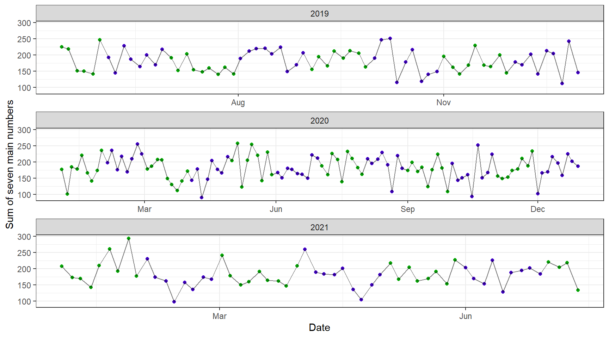

3 Numerical and graphical summaries
3.1 Packages
library(tidyverse)
library(lubridate)
theme_set(theme_bw())3.2 Plan
From the wide data:
- Most frequent minimum (
num1), most frequent maximum (num7) - Summary statistics for the minimum and maximum
- Distribution of the sum of the seven main numbers
- Sum of the seven main numbers with respect to time
From the long data:
- For the sake of illustration, repeat everything that was done for the wide data
- Distribution of numbers for each slot, i.e.
num1,num2, ...,bonus - Most frequent numbers in a given month
- Co-occurrences
3.3 Wide data
lottomax_wide <- readRDS("./data/lottomax_wide.RDS")
lottomax_wide## # A tibble: 227 x 11
## year date result num1 num2 num3 num4 num5 num6 num7 bonus
## <fct> <date> <chr> <int> <int> <int> <int> <int> <int> <int> <int>
## 1 2019 2019-05-14 9 24 27 33 ~ 9 24 27 33 40 44 48 41
## 2 2019 2019-05-17 4 21 23 39 ~ 4 21 23 39 40 42 50 17
## 3 2019 2019-05-21 2 3 8 18 31~ 2 3 8 18 31 39 50 33
## 4 2019 2019-05-24 9 11 15 19 ~ 9 11 15 19 20 35 41 28
## 5 2019 2019-05-28 4 9 10 26 2~ 4 9 10 26 27 29 37 14
## 6 2019 2019-05-31 6 29 34 39 ~ 6 29 34 39 42 47 50 22
## 7 2019 2019-06-04 7 19 22 28 ~ 7 19 22 28 34 41 42 12
## 8 2019 2019-06-07 4 8 13 23 2~ 4 8 13 23 25 33 39 17
## 9 2019 2019-06-11 18 23 28 32~ 18 23 28 32 34 44 50 29
## 10 2019 2019-06-14 4 11 20 22 ~ 4 11 20 22 37 44 49 13
## # ... with 217 more rows3.3.1 Most frequent minimums and maximums - overall
min_counts <- lottomax_wide %>%
count(num1) %>%
arrange(desc(n))
head(min_counts)## # A tibble: 6 x 2
## num1 n
## <int> <int>
## 1 1 31
## 2 2 24
## 3 3 24
## 4 5 24
## 5 4 21
## 6 9 16The drawn numbers should be treated as factors when plotting since these are discrete values. Note that they are converted to factor when plotting, but we are not modifying the supplied data. If the drawn numbers were instead treated as continuous values, the axis would start at zero which just look "off".
The bar graph will make use of geom_col rather than geom_bar since we have the counts already.
geom_bar would be used when we need to obtain counts from the data before making the bars.
ggplot(min_counts, aes(x=factor(num1), y=n))+
geom_col()+
labs(x="Minimum number", y="Count")
Although it would be preferable to reduce some of the vertical gridlines, we should note that some numbers have actually never occurred as the minimum, i.e. the numbers appearing on the x-axis are not consecutive. If we wish to reduce some of the gridlines, we need to make sure that all numbers from 1 to 50 are appearing on the x-axis.
We can fill in the unobserved numbers using the complete function found within the tidyr package.
min_counts_complete <- min_counts %>%
complete(
num1 = full_seq(1:50, period=1),
fill = list(n = 0)
)ggplot(min_counts_complete, aes(x=factor(num1), y=n))+
geom_col()+
labs(x="Minimum number", y="Count")Now reusing the same graph as above, let's reduce the number of vertical gridlines.
ggplot(min_counts_complete, aes(x=factor(num1), y=n))+
geom_col()+
scale_x_discrete(breaks=factor(seq(1, 50, 7)))+
labs(x="Minimum number", y="Count")
Realistically, the largest possible minimum number that could occur would be 44, resulting in a draw of seven consecutive numbers (44 to 50). This means that we could actually shorten the x-axis to only go up to 44.
Now let's repeat the same visulisation process for the maximum number of each draw.
max_counts <- lottomax_wide %>%
count(num7) %>%
arrange(desc(n))
head(max_counts)## # A tibble: 6 x 2
## num7 n
## <int> <int>
## 1 50 32
## 2 49 25
## 3 48 24
## 4 46 21
## 5 44 18
## 6 47 18ggplot(max_counts, aes(x=factor(num7), y=n))+
geom_col()+
labs(x="Maximum number", y="Count")
max_counts_complete <- max_counts %>%
complete(
num7 = full_seq(1:50, period=1),
fill = list(n = 0)
)ggplot(max_counts_complete, aes(x=factor(num7), y=n))+
geom_col()+
scale_x_discrete(breaks=factor(seq(1, 50, 7)))+
labs(x="Maximum number", y="Count")
Similar to the previous discussion, the smallest possible maximum number that could occur would be 7, resulting in a draw of seven consecutive numbers (1 to 7). This means that the x-axis could be shorted to begin at 7.
3.3.2 Which numbers have NEVER been in the minimum/maximums?
(Keeping in mind that we have data for roughly half of 2019, the full data for 2020, and roughly half of 2021.)
Using the "completed" data, we can obtain the numbers which have never been the minimum/maximum by filtering for numbers with a count of zero.
never_min <- min_counts_complete %>%
filter(n==0) %>%
pull(num1)
never_min## [1] 16 24 27 28 29 31 32 33 34 35 36 37 38 39 40 41 42 43 44 45 46 47 48 49 50It is unsurprising that 44 has never been the minimum, since if 44 ever was the minimum, the seven winning numbers would be the consecutive numbers between 44 and 50.
never_max <- max_counts_complete %>%
filter(n==0) %>%
pull(num7)
never_max## [1] 1 2 3 4 5 6 7 8 9 10 11 12 13 14 15 16 17 18 19 21 22 23 24 26 30From these results, it looks like we should pick at least one number between 1 and 15 (and or even between 17 and 23), and at least one number between 30 and 50!
3.3.3 Most frequent minimum and maximum - by year
min_by_year <- lottomax_wide %>%
group_by(year, num1) %>%
summarise(freq=n(), .groups="drop") %>%
group_by(year) %>%
slice_max(order_by=freq, n=3) %>%
ungroup()
min_by_year## # A tibble: 11 x 3
## year num1 freq
## <fct> <int> <int>
## 1 2019 1 10
## 2 2019 4 8
## 3 2019 3 7
## 4 2020 3 14
## 5 2020 5 13
## 6 2020 1 11
## 7 2020 2 11
## 8 2021 1 10
## 9 2021 2 8
## 10 2021 5 5
## 11 2021 6 5ggplot(min_by_year, aes(x=factor(num1), y=freq))+
geom_col()+
facet_wrap(~year, scales="free_x")+
labs(x="Minimum number", y="Count")The x-axis of this plot is ordered by the minimum number drawn and not by the counts. But we
can order by counts if we want to. We will make use of the functions reorder_within and
scale_x_reordered from the tidytext package.
min_by_year %>%
mutate(num1_reordered = tidytext::reorder_within(num1, by=desc(freq), within=year)) %>%
ggplot(aes(x=num1_reordered, y=freq))+
geom_col()+
tidytext::scale_x_reordered()+
facet_wrap(~year, scales="free_x")+
labs(x="Minimum number", y="Count")
The above can be repeated using the maximum number.
max_by_year <- lottomax_wide %>%
group_by(year, num7) %>%
summarise(freq=n(), .groups="drop") %>%
group_by(year) %>%
slice_max(order_by=freq, n=3) %>%
ungroup()
max_by_year## # A tibble: 10 x 3
## year num7 freq
## <fct> <int> <int>
## 1 2019 50 13
## 2 2019 44 7
## 3 2019 43 6
## 4 2019 46 6
## 5 2020 48 14
## 6 2020 49 14
## 7 2020 50 12
## 8 2021 47 7
## 9 2021 49 7
## 10 2021 50 7ggplot(max_by_year, aes(x=factor(num7), y=freq))+
geom_col()+
facet_wrap(~year, scales="free_x")+
labs(x="Maximum number", y="Count")max_by_year %>%
mutate(num7_reordered = tidytext::reorder_within(num7, by=desc(freq), within=year)) %>%
ggplot(aes(x=num7_reordered, y=freq))+
geom_col()+
tidytext::scale_x_reordered()+
facet_wrap(~year, scales="free_x")+
labs(x="Maximum number", y="Count")
3.3.4 Summary statistics for minimum and maximum
lottomax_wide %>%
select(num1, num7) %>%
sapply(summary)## num1 num7
## Min. 1.000000 20.00000
## 1st Qu. 3.000000 42.00000
## Median 5.000000 46.00000
## Mean 6.709251 44.44493
## 3rd Qu. 9.000000 48.50000
## Max. 30.000000 50.000003.3.5 Distribution of the sum of the seven main numbers
draw_sums <- lottomax_wide %>%
select(date, contains("num")) %>%
rowwise() %>%
mutate(total = sum(c_across(contains("num"))))
draw_sums## # A tibble: 227 x 9
## # Rowwise:
## date num1 num2 num3 num4 num5 num6 num7 total
## <date> <int> <int> <int> <int> <int> <int> <int> <int>
## 1 2019-05-14 9 24 27 33 40 44 48 225
## 2 2019-05-17 4 21 23 39 40 42 50 219
## 3 2019-05-21 2 3 8 18 31 39 50 151
## 4 2019-05-24 9 11 15 19 20 35 41 150
## 5 2019-05-28 4 9 10 26 27 29 37 142
## 6 2019-05-31 6 29 34 39 42 47 50 247
## 7 2019-06-04 7 19 22 28 34 41 42 193
## 8 2019-06-07 4 8 13 23 25 33 39 145
## 9 2019-06-11 18 23 28 32 34 44 50 229
## 10 2019-06-14 4 11 20 22 37 44 49 187
## # ... with 217 more rowsggplot(draw_sums, aes(x=total))+
geom_histogram(bins=9)+
labs(x="Sum of seven main numbers", y="Frequency")3.3.6 Sum of the seven main numbers with respect to time
I want to make an additional variable so that it will be easier to distinguish neighbouring months. Two colours will be used — one for even months and one for odd months.
draw_sums <- draw_sums %>%
mutate(month_colour = factor(month(date) %% 2))ggplot(draw_sums, aes(x=date, y=total))+
geom_point(aes(colour=month_colour), show.legend=FALSE) +
geom_line(alpha=0.5)+
scale_colour_manual(values=c("#07a707", "#4000c4"))+
scale_x_date(date_breaks="3 months", date_labels="%b '%y")+
labs(x="Date", y="Sum of seven main numbers")This graph looks a bit squished. Might look better if we facet by year.
draw_sums <- draw_sums %>%
mutate(year = factor(year(date)))
ggplot(draw_sums, aes(x=date, y=total))+
geom_point(aes(colour=month_colour), show.legend=FALSE)+
geom_line(alpha=0.5)+
scale_colour_manual(values=c("#07a707", "#4000c4"))+
scale_x_date(date_breaks="3 months", date_labels="%b")+
facet_wrap(~year, nrow=3, scales="free_x")+
labs(x="Date", y="Sum of seven main numbers")
3.3.7 Minimums and maximums over time
min_max <- lottomax_wide %>%
select(year, date, num1, num7) %>%
mutate(month_colour = factor(month(date) %% 2))
ggplot(min_max, aes(x=date))+
geom_point(aes(y=num1, colour=month_colour), show.legend=FALSE)+
geom_line(aes(y=num1), alpha=0.5)+
geom_point(aes(y=num7, colour=month_colour), show.legend=FALSE)+
geom_line(aes(y=num7), alpha=0.5)+
scale_colour_manual(values=c("#07a707", "#4000c4"))+
scale_x_date(date_breaks="3 months", date_labels="%b '%y")+
labs(x="Date", y="Number drawn")Again, this looks a bit squished. Facet by year.
ggplot(min_max, aes(x=date))+
geom_point(aes(y=num1, colour=month_colour), show.legend=FALSE)+
geom_line(aes(y=num1), alpha=0.5)+
geom_point(aes(y=num7, colour=month_colour), show.legend=FALSE)+
geom_line(aes(y=num7), alpha=0.5)+
scale_colour_manual(values=c("#07a707", "#4000c4"))+
scale_x_date(date_breaks="3 months", date_labels="%b")+
facet_wrap(~year, nrow=3, scales="free_x")+
labs(x="Date", y="Number drawn", caption="Minimum and maximum number drawn by date")3.4 Long data
lottomax_long <- readRDS("./data/lottomax_long.RDS")
lottomax_long## # A tibble: 1,816 x 5
## year date result role number
## <fct> <date> <chr> <chr> <int>
## 1 2019 2019-05-14 9 24 27 33 40 44 48 41 num1 9
## 2 2019 2019-05-14 9 24 27 33 40 44 48 41 num2 24
## 3 2019 2019-05-14 9 24 27 33 40 44 48 41 num3 27
## 4 2019 2019-05-14 9 24 27 33 40 44 48 41 num4 33
## 5 2019 2019-05-14 9 24 27 33 40 44 48 41 num5 40
## 6 2019 2019-05-14 9 24 27 33 40 44 48 41 num6 44
## 7 2019 2019-05-14 9 24 27 33 40 44 48 41 num7 48
## 8 2019 2019-05-14 9 24 27 33 40 44 48 41 bonus 41
## 9 2019 2019-05-17 4 21 23 39 40 42 50 17 num1 4
## 10 2019 2019-05-17 4 21 23 39 40 42 50 17 num2 21
## # ... with 1,806 more rows3.4.1 Most frequent minimums and maximums - overall
min_counts <- lottomax_long %>%
filter(role == "num1") %>%
count(number) %>%
arrange(desc(n))